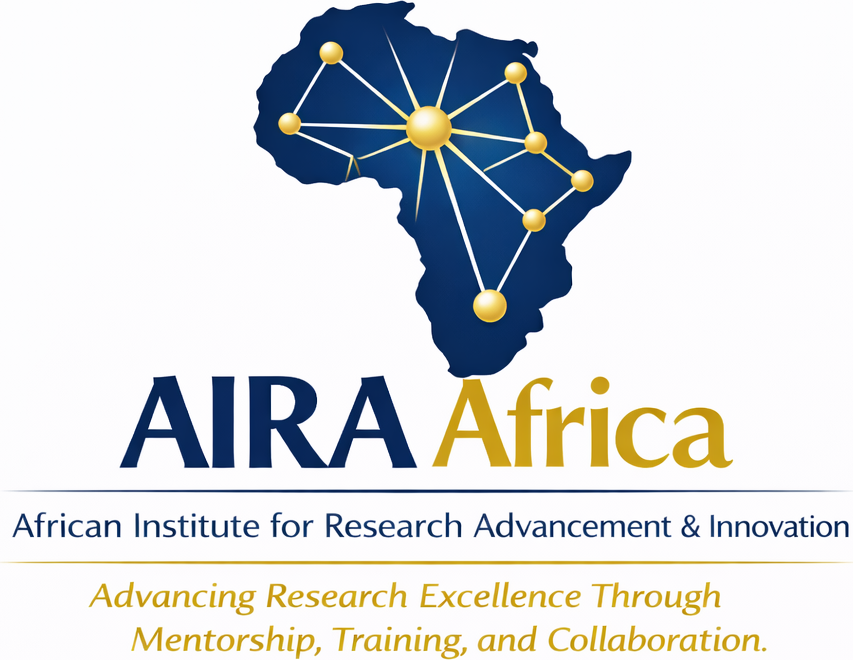
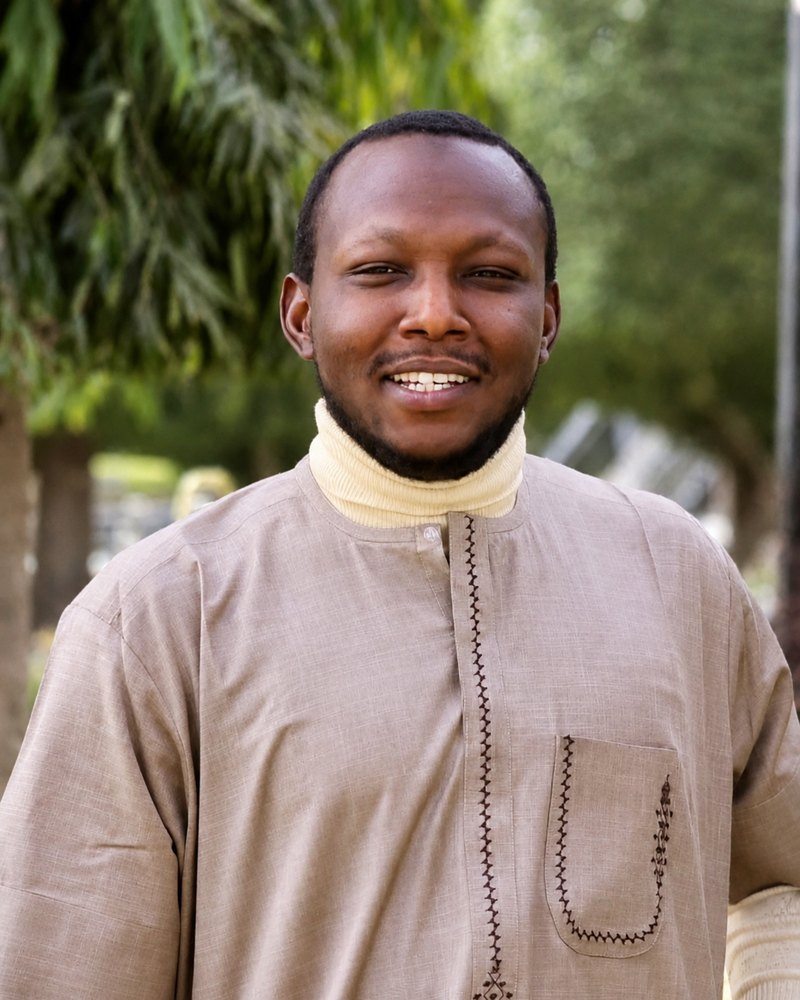

About the Institute
AIRA Africa is a legal non-profit with a pan-African ambition and a deliberately modest starting posture: digital-first, evidence-first, and narrow before wide.
Our Story
AIRA Africa was founded in 2026 in Kano State, Nigeria, and incorporated on 30 June 2026 as a non-profit company limited by guarantee under the Companies and Allied Matters Act (CAMA) 2020.
The Institute exists because too many African students and early-career researchers lack structured mentorship, publication support, and networks — while the continent's health, agricultural, and development problems demand local research capacity.
We are not yet a campus, a journal publisher, or a grant-making body. We are assembling the people and systems to run a first mentorship programme well, document it, and use that evidence to grow.

"Digital-first for reach. Proof before scale. Honesty before branding."
Mission · Vision · Values
To advance research excellence and innovation across Africa through structured mentorship, capacity development, collaborative research, and knowledge dissemination.
An Africa where students, early-career researchers, and professionals can become globally competitive scholars without having to leave home to find mentorship and standards.
Integrity over image · Focus over sprawl · Evidence over slogans · Accessibility · Service to African development.
Registration & Governance
AIRA Africa is registered with the Corporate Affairs Commission (CAC). As a company limited by guarantee, no portion of its income or property is distributed to members — all resources are applied solely to the Institute's objectives.
The registered address is our legal correspondence address. Day-to-day operations are currently digital. A dedicated physical office will come when funding and activity justify it — not before.
Leadership
We are a small founding team. Expanding the Board with independent, credible voices is a near-term priority.

An MRI specialist radiographer, educator, and researcher with over nine years of experience across clinical radiography, MRI, ultrasound, and CT. He has held academic and clinical leadership roles in Nigeria — training medical radiography students and coordinating advanced imaging and neuroimaging services — and is currently pursuing a PhD in Medical Radiography at Bayero University Kano.
An agricultural entrepreneur, researcher, and mentor, and the Chief Executive Officer of Real Agro and Integrated Services. He holds a PhD from Ahmadu Bello University, Zaria, and is an active farmer and agribusiness innovator. At AIRA Africa, he leads the Agriculture and Food Systems portfolio.
Company Secretary of AIRA Africa, responsible for corporate governance, statutory records, and regulatory compliance, and for supporting the Board in the orderly administration of the Institute's affairs.
Members, mentors, partners, and supporters — help us build something real.